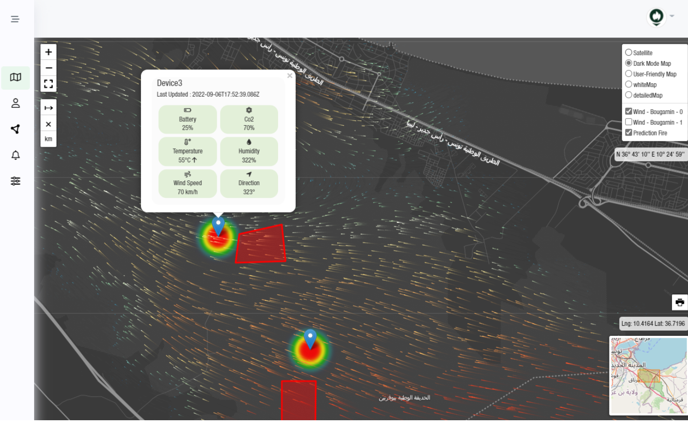
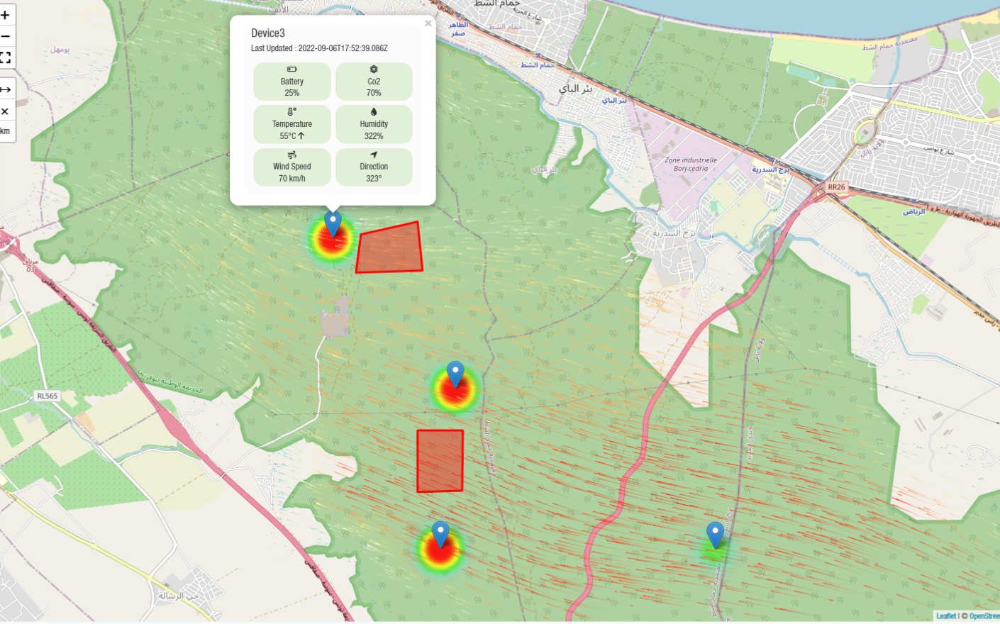
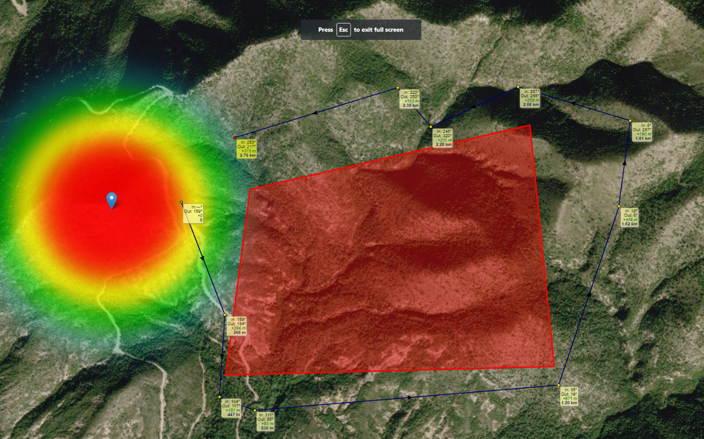

<div id="ajax-page" class="ajax-page-content">
    <div class="ajax-page-wrapper">
        <div class="ajax-page-nav">
            <div class="nav-item ajax-page-prev-next">
                <a class="ajax-page-load" href="portfolio-1.html"><i class="lnr lnr-chevron-left"></i></a>
                <a class="ajax-page-load" href="portfolio-3.html"><i class="lnr lnr-chevron-right"></i></a>
            </div>
            <div class="nav-item ajax-page-close-button">
                <a id="ajax-page-close-button" href="#"><i class="lnr lnr-cross"></i></a>
            </div>
        </div>

        <div class="ajax-page-title">
            <h1>FireFlow</h1>
        </div>

        <div class="row">
            <div class="col-sm-8 col-md-8 portfolio-block">
                <div class="owl-carousel portfolio-page-carousel">
                    <div class="item">
                        
                    </div>
                    <div class="item">
                        
                    </div>
                    <div class="item">
                        
                    </div>
                </div>

                <div class="portfolio-page-video embed-responsive embed-responsive-16by9">
                    <iframe width="560" height="315" src="https://www.youtube.com/embed/gpI5CX1Xfk4" title="YouTube video player" frameborder="0" allow="accelerometer; autoplay; clipboard-write; encrypted-media; gyroscope; picture-in-picture; web-share" allowfullscreen></iframe>

                </div>

                <script type="text/javascript">
                    jQuery(document).ready(function($){
                        $('.portfolio-page-carousel').imagesLoaded(function(){
                            $('.portfolio-page-carousel').owlCarousel({
                                smartSpeed:1200,
                                items: 1,
                                loop: true,
                                dots: true,
                                nav: true,
                                navText: false,
                                margin: 10,
                                autoHeight:true
                            });
                        });
                    });
                </script>
            </div>

            <div class="col-sm-4 col-md-4 portfolio-block">
                <!-- Project Description -->
                <div class="project-description">
                    <div class="block-title">
                        <h3>Description</h3>
                    </div>
                    <ul class="project-general-info">
                        <li><p><i class="fa fa-user"></i> Anas Chaibi | Omar Gassab | Ines Bessrour | Omar Hammami | Arij Saleh | Iyed Dhahri</p></li>
                        <li><p><i class="fa fa-calendar"></i> Jul 2022 - Oct 2022 </p></li>
                        <li><p><i class="fa fa-newspaper"></i> Press</p>

                            <p><a target="_blank" href="https://africanmanager.com/avec-les-jeunes-pousses-la-technologie-de-demain-est-deja-la/">African Manager</a></p>
                            <p><a target="_blank" href="https://www.ilboursa.com/marches/les-laureats-de-la-12e-edition-de-lorange-summer-challenge_37116">Il Boursa</a></p>
                            <p><a target="_blank" href="https://www.businessnews.com.tn/ceremonie-de-remise-des-prix-de-la-12e-edition-dorange-summer-challenge,520,123560,3">Business News</a></p>

                        </li>

                    </ul>

                    <p class="text-justify">
                        <b>FireFlow : Un réseau de nœuds IoT pour évaluer et prédire tout risque d'incendies</b>
                        <p>
                        <b>Project Presentation :</b>
                        <a href="https://bit.ly/3Te15TK" target="_blank">https://bit.ly/3Te15TK</a>
                        </p>
                        <p>
                        C'est un dispositif qui fournit des solutions de détection ultra-précoces des incendies ainsi que des prédictions sur la propagation du feu dans les forêts, montagnes, etc.
                        </p>
                        Il s'agit d'un réseau de nœuds connectés couvrant les montagnes et les forêts, placés à des coordonnées critiques, équipés d'une station météorologique et d'un ensemble de capteurs. Grâce à un modèle d'intelligence artificielle, la solution permet aussi de déterminer les routes à prendre sur une carte d'itinéraires pour garantir une intervention sûre.
                        <p>
                        La solution propose également une plateforme qui affiche les emplacements des incendies en temps réel sur une carte thermique interactive.
                        </p>
                    </p>
                    <!-- /Project Description -->

                    <!-- Technology -->
                    <div class="tags-block">
                        <div class="block-title">
                            <h3>Technology</h3>
                        </div>
                        <ul class="tags">
                            <li><a>React</a></li>
                            <li><a>Node</a></li>
                            <li><a>Express</a></li>
                            <li><a>MongoDb</a></li>
                            <li><a>Redux</a></li>
                            <li><a>Bootstrap</a></li>
                            <li><a>MQTT</a></li>
                            <li><a>ESP32</a></li>
                            <li><a>Arduino</a></li>
                            <li><a>BigQuery</a></li>
                            <li><a>TensorFlow</a></li>
                            <li><a>Vertex AI</a></li>
                            <li><a>Firebase</a></li>
                        </ul>
                    </div>
                    <!-- /Technology -->

                </div>
                <!-- Project Description -->
            </div>
        </div>
    </div>
</div>
